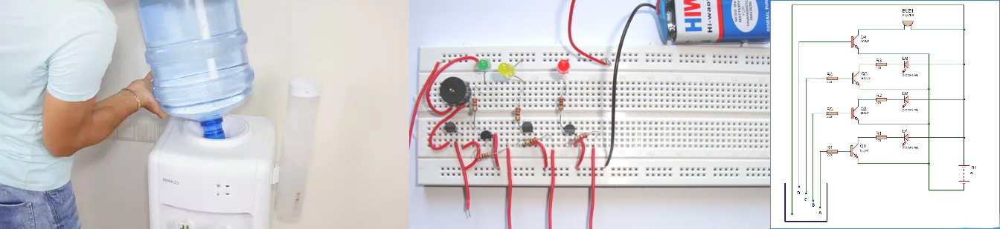

The Automatic Refill Notification System
September 2018 - December 2018
Kumaraguru College of Technology, Coimbatore, Tamil Nadu
Overview:
The Automatic Refill Notification System is designed to enhance the efficiency of bubble-top water dispensers. By utilizing a water level sensor and a GSM module, the system can promptly notify maintenance staff about the dispenser's status and location, ensuring timely refills. This innovative solution has demonstrated a significant reduction in refill response time, resulting in improved overall efficiency and customer satisfaction.
Simple Working Explanation:
You can operate this circuit on any battery having voltage from 5 to 12 volts. The working of this circuit is quite simple. When the water reaches the desired level the probes will be attached there and the water will touch them. Since water is a great conductor of electricity the probes will start conducting are gives power to the circuit. The LED will light up giving a visual indication. A current limiting resistor is always used with the LED so that it doesn’t damage. You can modify this circuit as shown in figure by connecting three or more LEDs with this circuit along with a resistor and connecting them to different levels of the water tank. In this way, you can indicate the low, medium, and full levels of the tank. Place the probes on the desired three-level and connect the battery. Each LED will light up when water reaches that level.
Features:
Utilizes water level sensor and GSM module for real-time monitoring
Sends notifications to maintenance staff indicating dispenser location and status
Enables rapid refills, minimizing customer waiting time
Application extends beyond water dispensers, suitable for oil and chemical level monitoring
Findings and Suggestions:
The project successfully achieved its goal of creating a simple and cost-effective water level indicator. It is worth considering the application of this system for monitoring levels in various contexts beyond water cans, such as oil and chemical labs. The technology's versatility makes it a valuable tool for improving efficiency in different industries.
Impact:
Reduced refill response time by 30 minutes
Improved overall operational efficiency
Enhanced customer satisfaction through timely refills
Conclusion
This project showcases the potential of technology to streamline operations and deliver practical solutions to real-world challenges.